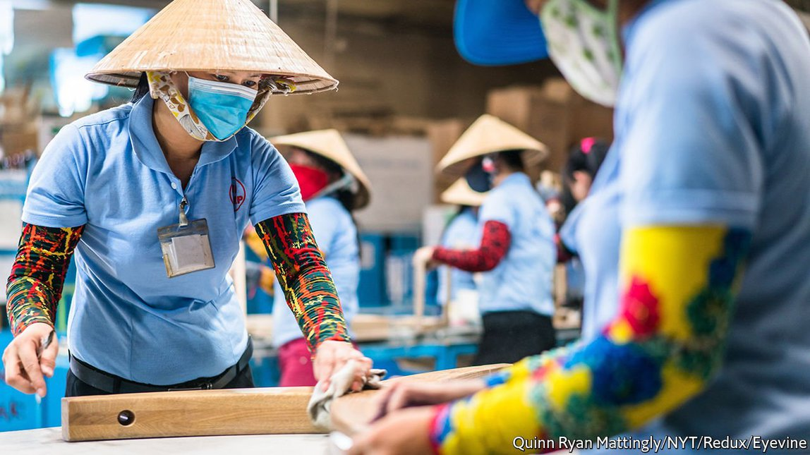
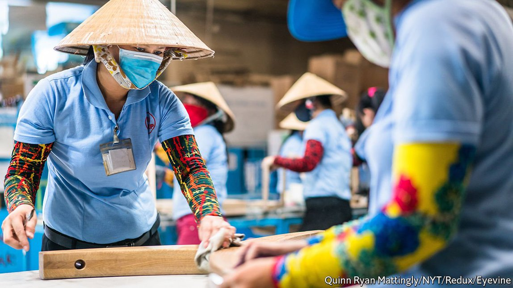

2021-09-30T15:19:49+00:00
The special sauce
秘方
秘方
The economy that covid-19 could not stop
新冠不能阻挡的经济
新冠不能阻擋的經濟
Trade and foreign investment helped Vietnam emerge from extreme poverty. Can they make it rich?
贸易和外国投资帮助越南摆脱了极端贫困，但能帮它致富吗？
貿易和外國投資幫助越南擺脫了極端貧困，但能幫它致富嗎？
 
HAVING IMPRESSED the world by taming the virus last year, Vietnam is now in the middle of its worst outbreak of covid-19 by far. Parts of the country are in strict lockdown and a swathe of factories, from those making shoes for Nike to those producing smartphones for Samsung, have either slowed or shut down, disrupting global supply chains. Yet integration with global manufacturing has kept Vietnam’s economy humming during the pandemic. In 2020 GDP rose by 2.9% even as most countries recorded deep recessions. Despite the latest outbreak, this year could see even faster growth. The World Bank’s latest forecasts, published on August 24th, point to an expansion of 4.8% in 2021.
越南去年驯服了新冠病毒，给世界留下了深刻印象，但如今却深陷它迄今显然最严重的一轮疫情之中。该国部分地区处于严格封锁状态，而大量工厂——从为耐克生产鞋子的到为三星生产智能手机的——要么减产，要么停工，扰乱了全球供应链。然而，与全球制造业的融合使越南经济在疫情期间保持了繁荣。2020年尽管大多数国家都经历了深度衰退，越南GDP增长了2.9%。虽然最近疫情爆发，但今年的增速可能还会更快。世界银行于8月24日发布的最新预测认为它在2021年将增长4.8%。
越南去年馴服了新冠病毒，給世界留下了深刻印象，但如今卻深陷它迄今顯然最嚴重的一輪疫情之中。該國部分地區處於嚴格封鎖狀態，而大量工廠——從為耐克生產鞋子的到為三星生產智能手機的——要麼減產，要麼停工，擾亂了全球供應鏈。然而，與全球製造業的融合使越南經濟在疫情期間保持了繁榮。2020年儘管大多數國家都經歷了深度衰退，越南GDP增長了2.9%。雖然最近疫情爆發，但今年的增速可能還會更快。世界銀行於8月24日發布的最新預測認為它在2021年將增長4.8%。
This performance hints at the real reason to be impressed by Vietnam. Its openness to trade and investment has made the country, with GDP per capita of a mere $2,800, an important link in supply chains. And that in turn has powered a remarkable expansion. It has been one of the five fastest-growing countries in the world over the past 30 years, beating its neighbours hands down (see chart 1). Its record has been characterised not by the fits and starts of many other frontier markets, but by steady growth. The government is even more ambitious, wanting Vietnam to become a high-income country by 2045, a task that requires growing at 7% a year. What is the secret to Vietnam’s success—and can it be sustained?
这一表现透露出越南令人印象深刻的真正原因。对贸易和投资的开放使这个人均GDP仅2800美元的国家成为了供应链中的重要一环。这反过来又推动了显著的扩张。在过去的30年里，它一直是世界上增长最快的五个国家之一，远超邻国（见图1）。这一履历的特点不是在许多其他前沿市场出现的那种起起落落，而是稳定增长。政府的计划甚至更为宏伟，希望越南到2045年成为高收入国家，而这项任务需要它以每年7%的速度增长。越南成功的秘诀是什么？它能否持续下去？
這一表現透露出越南令人印象深刻的真正原因。對貿易和投資的開放使這個人均GDP僅2800美元的國家成為了供應鏈中的重要一環。這反過來又推動了顯著的擴張。在過去的30年里，它一直是世界上增長最快的五個國家之一，遠超鄰國（見圖1）。這一履歷的特點不是在許多其他前沿市場出現的那種起起落落，而是穩定增長。政府的計劃甚至更為宏偉，希望越南到2045年成為高收入國家，而這項任務需要它以每年7%的速度增長。越南成功的秘訣是什麼？它能否持續下去？
Vietnam is often compared to China in the 1990s or early 2000s, and not without reason. Both are communist countries that, led by a one-party political system, turned capitalist and focused on export-led growth. But there are big differences, too. For a start, even describing Vietnam as export-intensive does not do justice to just how much it sells abroad. Its goods trade exceeds 200% of GDP. Few economies, except the most resource-rich countries or city states dominated by maritime trade, are or have ever been so trade-intensive.
在1990年代或2000年代初期，越南经常被拿来与中国相比较，这不无道理。两者都是共产主义国家，由一党制政体领导，都转向资本主义并专注于以出口为导向的增长。但两国也有很大的不同。首先，即使将越南描述为出口密集型也不足以体现它在国外的销售量。该国货物贸易额超过了GDP的200%。除了资源最丰富的国家或以海上贸易为主的城市国家之外，很少有经济体在当下或曾经有如此密集的贸易。
在1990年代或2000年代初期，越南經常被拿來與中國相比較，這不無道理。兩者都是共產主義國家，由一黨制政體領導，都轉向資本主義並專註於以出口為導向的增長。但兩國也有很大的不同。首先，即使將越南描述為出口密集型也不足以體現它在國外的銷售量。該國貨物貿易額超過了GDP的200%。除了資源最豐富的國家或以海上貿易為主的城市國家之外，很少有經濟體在當下或曾經有如此密集的貿易。
It is not just the level of exports but the nature of the exporters that makes Vietnam different from China. Indeed, its deep connection to global supply chains and high levels of foreign investment make it seem more like Singapore. Since 1990 Vietnam has received average foreign-direct-investment inflows worth 6% of GDP each year, more than twice the global level—and far more than China or South Korea have ever recorded over a sustained period.
越南与中国的不同之处不仅仅在于出口水平，还有出口商的性质。事实上，它与全球供应链的深厚连结和高水平的外国投资使它看起来更像新加坡。自1990年以来，越南每年平均获得的外国直接投资流入量相当于GDP的6%，是全球水平的两倍多——而且远远超过中国或韩国在任何一段持续时期内达到的记录。
越南與中國的不同之處不僅僅在於出口水平，還有出口商的性質。事實上，它與全球供應鏈的深厚連結和高水平的外國投資使它看起來更像新加坡。自1990年以來，越南每年平均獲得的外國直接投資流入量相當於GDP的6%，是全球水平的兩倍多——而且遠遠超過中國或韓國在任何一段持續時期內達到的記錄。
As the rest of East Asia developed and wages there rose, global manufacturers were lured by Vietnam’s low labour costs and stable exchange rate. That fuelled an export boom. In the past decade, exports by domestic firms have risen by 137%, while those by foreign-owned companies have surged by 422% (see chart 2).
随着东亚其他地区的发展和工资上涨，越南低廉的劳动力成本和稳定的汇率吸引了全球制造商。这推动了一轮出口繁荣。在过去十年中，其国内企业的出口增长了137%，而外资企业的出口飙升了422%（见图2）。
隨着東亞其他地區的發展和工資上漲，越南低廉的勞動力成本和穩定的匯率吸引了全球製造商。這推動了一輪出口繁榮。在過去十年中，其國內企業的出口增長了137%，而外資企業的出口飆升了422%（見圖2）。
But the widening gap between foreign and domestic firms now poses a threat to Vietnam’s expansion. It has become overwhelmingly dependent on investment and exports by foreign companies, whereas domestic firms have underperformed.
但是，外国和本国公司之间不断扩大的差距如今对越南的扩张构成了威胁。它已变得压倒性地依赖外国公司的投资和出口，而本国公司则表现不佳。
但是，外國和本國公司之間不斷擴大的差距如今對越南的擴張構成了威脅。它已變得壓倒性地依賴外國公司的投資和出口，而本國公司則表現不佳。
Foreign firms can continue to grow, providing more employment and output. Yet there are limits to how far they can drive Vietnam’s development. The country will need a productive services sector. As living standards rise it may become less attractive to foreign manufacturers, and workers will need other opportunities.
外国公司可以继续增长，提供更多的就业和产出。然而，它们对于推动越南发展的作用是有上限的。该国将需要一个高产出的服务部门。随着生活水平的提高，越南对外国制造商的吸引力可能会降低，而工人将需要其他机会。
外國公司可以繼續增長，提供更多的就業和產出。然而，它們對於推動越南發展的作用是有上限的。該國將需要一個高產出的服務部門。隨着生活水平的提高，越南對外國製造商的吸引力可能會降低，而工人將需要其他機會。
Part of the drag on domestic enterprise comes from state-owned firms. Their importance in overall activity and employment has shrunk (see chart 3). But they still have an outsize effect on the economy through their preferential position in the banking system, which lets them borrow cheaply. Banks make up for that unproductive lending by charging other domestic firms higher rates. Whereas foreign companies can easily access funding overseas, the average interest rate on a medium- or long-term bank loan in Vietnamese dong ran to 10.25% last year. Research by academics for the Centre for Economic Performance at the London School of Economics also suggests that productivity gains in the five years after Vietnam joined the World Trade Organisation in 2007 would have been 40% higher without state-owned firms.
国内企业所受的拖累部分来自于国有企业。它们在整体经济活动和就业中的重要性已经下降（见图3）。但在银行系统中享受的优待地位让它们能够以低廉的价格借贷，从而仍对经济产生巨大影响。银行通过向其他国内公司收取更高的利息来弥补这种无益的贷款。即便外国公司可以轻松从海外获得融资，去年越南盾中长期银行贷款平均利率达到了10.25%。伦敦经济学院经济绩效中心的学者的研究还表明，如果没有国有企业，越南在2007年加入世贸组织后的五年内的生产率提升会比实际情况高出40%。
國內企業所受的拖累部分來自於國有企業。它們在整體經濟活動和就業中的重要性已經下降（見圖3）。但在銀行系統中享受的優待地位讓它們能夠以低廉的價格借貸，從而仍對經濟產生巨大影響。銀行通過向其他國內公司收取更高的利息來彌補這種無益的貸款。即便外國公司可以輕鬆從海外獲得融資，去年越南盾中長期銀行貸款平均利率達到了10.25%。倫敦經濟學院經濟績效中心的學者的研究還表明，如果沒有國有企業，越南在2007年加入世貿組織後的五年內的生產率提升會比實際情況高出40%。
To fire up the private sector, the government wants to nurture the equivalent of South Korea’s chaebol or Japan’s keiretsu, sprawling corporate groups that operate in a variety of sectors. The government is “trying to create national champions”, says Le Hong Hiep, a senior fellow at the ISEAS-Yusof Ishak Institute in Singapore, and a former Vietnamese civil servant.
为了激发私营部门的活力，越南政府希望培育相当于韩国财阀或日本经连会那样横跨多个领域的大型企业集团。新加坡东南亚研究所（ISEAS-Yusof Ishak Institute）的高级研究员、前越南公务员黎洪和（Le Hong Hiep）表示，政府正在“努力打造国家领军企业”。
為了激發私營部門的活力，越南政府希望培育相當於韓國財閥或日本經連會那樣橫跨多個領域的大型企業集團。新加坡東南亞研究所（ISEAS-Yusof Ishak Institute）的高級研究員、前越南公務員黎洪和（Le Hong Hiep）表示，政府正在“努力打造國家領軍企業”。
Vingroup, a dominant conglomerate, is the most obvious candidate. In VinPearl, VinSchool and VinMec, it has operations that spread across tourism, education and health. VinHomes, its property arm, is Vietnam’s largest listed private firm by market capitalisation.
举足轻重的企业集团Vingroup是最显而易见的候选对象。通过VinPearl、VinSchool和VinMec，它的业务遍及旅游、教育和医疗。其房地产部门VinHomes是越南市值最高的上市民营公司。
舉足輕重的企業集團Vingroup是最顯而易見的候選對象。通過VinPearl、VinSchool和VinMec，它的業務遍及旅遊、教育和醫療。其房地產部門VinHomes是越南市值最高的上市民營公司。
The group’s efforts to break into finished automotive production through VinFast, its carmaker, may become important for the economic development of a country that is usually known for intermediate manufacturing. In July the company’s Fadil car, which is based on the design for Opel’s Karl make, became Vietnam’s best-selling model, beating Toyota’s Vios. VinFast has grand ambitions abroad, too. In July it announced that it had opened offices in America and Europe and intended to sell electric vehicles there by March 2022.
该集团通过旗下汽车制造商VinFast进军成品汽车生产，这番努力可能对这个通常以中间制造闻名的国家的经济发展变得重要。7月，该公司基于欧宝Karl品牌设计的Fadil汽车击败了丰田的Vios，成为越南最畅销的车型。VinFast在国外也有远大抱负。7月，它宣布已在美国和欧洲开设办事处，并计划在2022年3月之前在那里开售电动汽车。
該集團通過旗下汽車製造商VinFast進軍成品汽車生產，這番努力可能對這個通常以中間製造聞名的國家的經濟發展變得重要。7月，該公司基於歐寶Karl品牌設計的Fadil汽車擊敗了豐田的Vios，成為越南最暢銷的車型。VinFast在國外也有遠大抱負。7月，它宣布已在美國和歐洲開設辦事處，並計劃在2022年3月之前在那裡開售電動汽車。
Fostering national champions while staying open to investment is not easy, however. VinFast benefits from a bevy of tax reductions, including a large cut in corporation tax for its first 15 years of operation. In August, state media also reported that the government was considering reinstating a 50% reduction in registration fees for locally built cars that expired last year.
然而，在对投资持开放态度的同时培养国家领军企业并不容易。VinFast受益于一系列减税措施，包括在它运营的前15年享受大幅削减的公司税。8月，官方媒体还报道说，政府正在考虑恢复去年到期的一项政策，继续为本地制造汽车减免50%的注册费用。
然而，在對投資持開放態度的同時培養國家領軍企業並不容易。VinFast受益於一系列減稅措施，包括在它運營的前15年享受大幅削減的公司稅。8月，官方媒體還報道說，政府正在考慮恢復去年到期的一項政策，繼續為本地製造汽車減免50%的註冊費用。
But the country’s membership of the Comprehensive and Progressive Agreement for Trans-Pacific Partnership, and a range of other trade and investment deals, means that it cannot offer preferential treatment to domestic producers. It must extend support to foreign firms that make cars in Vietnam, too. (By contrast, China’s trade policy, which prefers broad but shallow deals, does not constrain domestic policy in quite the same way.)
但越南是“全面与进步跨太平洋伙伴关系协定”以及一系列其他贸易和投资协议的成员，这意味着它不能向国内生产商提供优惠待遇。它还必须向在越南制造汽车的外国公司提供支持。（相比之下，中国的贸易政策倾向于广泛但肤浅的协议，并不会以类似的方式限制国内政策。）
但越南是“全面與進步跨太平洋夥伴關係協定”以及一系列其他貿易和投資協議的成員，這意味着它不能向國內生產商提供優惠待遇。它還必須向在越南製造汽車的外國公司提供支持。（相比之下，中國的貿易政策傾向於廣泛但膚淺的協議，並不會以類似的方式限制國內政策。）
Vietnam may also hope to rely on another source of growth. The economic boom has encouraged its enormous diaspora to invest, or even to return home. “There aren’t a lot of economies that are experiencing the sort of thing that Vietnam is,” says Andy Ho of VinaCapital, an investment firm with $3.7bn in assets. His family moved to America in 1977, where he was educated and worked in consulting and finance. He returned to Vietnam with his own family in 2004. “If I were Korean, I might have gone back in the 1980s, if I were Chinese I might have gone back in 2000.” Its successful diaspora makes Vietnam one of the largest recipients of remittances in the world; $17bn flowed in last year, equivalent to 6% of GDP.
越南也可能希望依靠另一个增长来源。经济繁荣鼓励了大量侨民投资母国，甚至回国。拥有 37 亿美元资产的投资公司越资股份（VinaCapital）的安迪·何（Andy Ho，音译）说：“没有多少经济体正在经历越南这种情况。”他随家人于1977年移居美国，他在那里接受教育并从事咨询和金融业。他于2004年与家人返回越南。“如果我是韩国人，我可能会在1980年代回国，如果我是中国人，我可能会在2000年回国。”成功的越南侨民使越南成为世界上最大的汇款接收国之一：去年流入了170亿美元，相当于GDP的6%。
越南也可能希望依靠另一個增長來源。經濟繁榮鼓勵了大量僑民投資母國，甚至回國。擁有 37 億美元資產的投資公司越資股份（VinaCapital）的安迪·何（Andy Ho，音譯）說：“沒有多少經濟體正在經歷越南這種情況。”他隨家人於1977年移居美國，他在那裡接受教育並從事諮詢和金融業。他於2004年與家人返回越南。“如果我是韓國人，我可能會在1980年代回國，如果我是中國人，我可能會在2000年回國。”成功的越南僑民使越南成為世界上最大的匯款接收國之一：去年流入了170億美元，相當於GDP的6%。
The setback from covid-19 aside, it might seem hard not to be rosy about a country that appears to be in the early stages of emulating an East Asian economic miracle. But no country has become rich through remittances alone. As Vietnam develops, sustaining rapid growth from exports of foreign companies will become increasingly difficult, and the tension between staying open to foreign investment and promoting national champions will become more acute. All of that makes reforming the domestic private sector and the financial system paramount. Without it, the government’s lofty goal of getting rich quick may prove beyond its reach. ■
撇开新冠疫情的拖累不谈，对于一个看起来正处于模仿东亚经济奇迹早期阶段的国家，似乎很难不感到乐观。但从来没有哪个国家仅靠汇款致富。随着越南的发展，保持外国企业出口快速增长的难度将越来越大，对外国投资保持开放与培植国家领军企业之间的紧张关系将更加尖锐。所有这些都使得国内私营部门和金融体系的改革成为重中之重。没有这种改革，政府快速致富的宏伟目标可能无法实现。■
撇開新冠疫情的拖累不談，對於一個看起來正處於模仿東亞經濟奇蹟早期階段的國家，似乎很難不感到樂觀。但從來沒有哪個國家僅靠匯款致富。隨着越南的發展，保持外國企業出口快速增長的難度將越來越大，對外國投資保持開放與培植國家領軍企業之間的緊張關係將更加尖銳。所有這些都使得國內私營部門和金融體系的改革成為重中之重。沒有這種改革，政府快速致富的宏偉目標可能無法實現。■